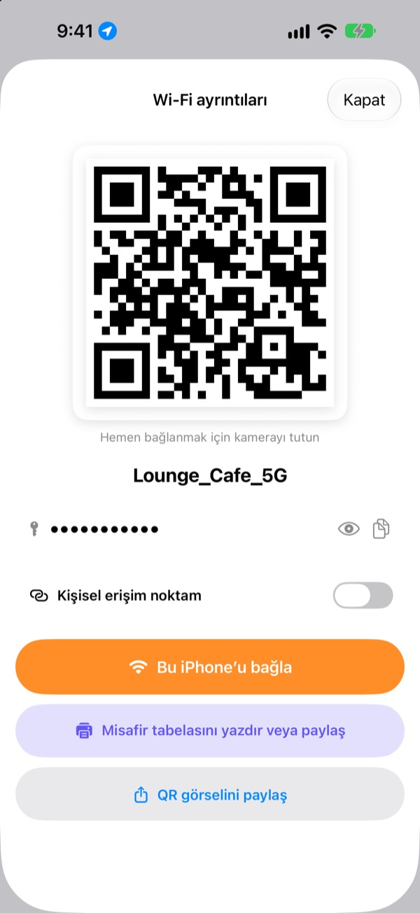
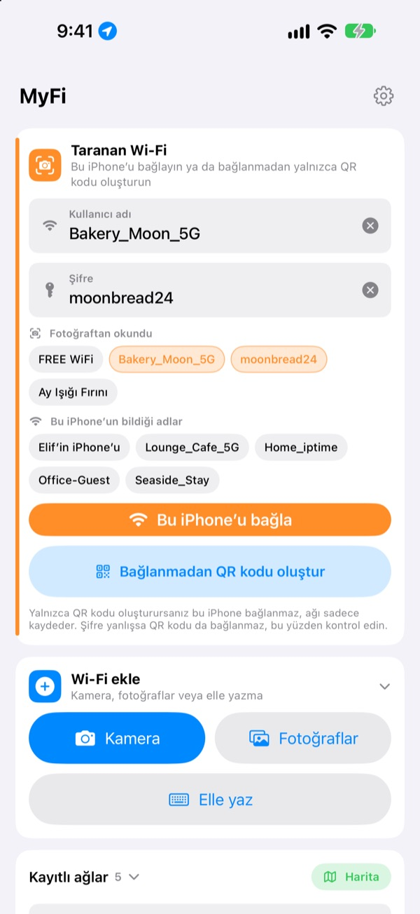
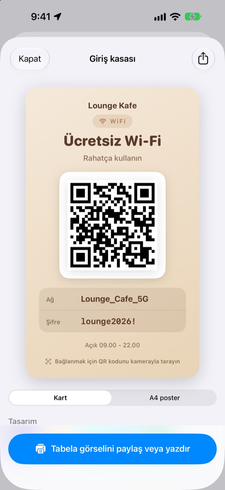
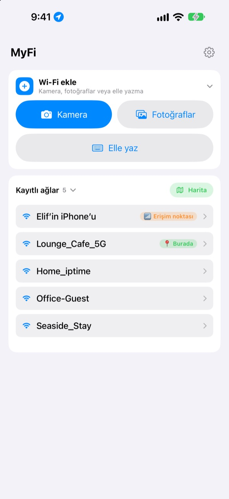

Şifreyi tek tek okumaya son.
QR kodunu göster.
Arkadaşların kamerayı tutması yeterli, hemen bağlanırlar. Kafenin duvarındaki tabela mı? Tek fotoğraf, bu iPhone bağlanır. Kopyalarken yazım hatası yok.
Tüm özellikler ücretsiz. iOS 17 veya sonrası yüklü iPhone.

Wi-Fi’ın için QR kodu oluştur
Adı ya da şifreyi değiştir, tabela anında güncellensin. Bir telefonun kamerasını tut, gerçekten bağlanma önerisi çıkar.
“Wi-Fi şifresi neydi?” Bugün kaçıncı kez?
Okurken büyük küçük harfi karıştırırsın. Duvardaki tabeladan kopyalarken 0 ile O’yu karıştırırsın. Sonra her şeyi yeniden anlatırsın. MyFi bunu tek fotoğraf ve tek QR koduna indirir.
Fotoğrafını çek, bağlan
Wi-Fi tabelasının ya da fişin fotoğrafını çek veya fotoğraflardan seç. MyFi ağ adını ve şifreyi okuyup bu iPhone’u bağlar. Tabelada QR kodu da varsa önce onu okur, böylece bilgiler tam doğru olur.
Yazı net değilse fotoğraftan çıkarılan parçayı ad ya da şifre alanına sürüklemen yeterli.

Misafir tabelası hazırla, yazdır
7 temadan birini seç; mekân adını, logoyu ve çalışma saatleri gibi satırları ekle. Kart ya da dikey A4 poster seç, görsel olarak kaydet veya AirPrint ile hemen yazdır.
Her mekân ya da masa için ayrı tabelalar hazırla, istediğin zaman düzenle.

Döndüğün yerler en üstte
Bağlandığın ya da paylaştığın ağlar o anki konumla birlikte kaydedilir. Aynı yere döndüğünde o ağ listenin en üstünde olur, kayıtlı tüm yerleri haritada da görürsün.
En çok paylaştığın Wi-Fi’ın QR kodunu Ana Ekran’a ya da Kilitli Ekran’a araç takımı olarak koy. Misafir sorunca ekranı göstermen yeter.

Üç adımda başla
- 1
Uygulamayı aç
Bir kez konum izni ister; çünkü iOS bağlı olduğun Wi-Fi’ın adını yalnızca bu izni olan uygulamalara söyler.
- 2
Çek ya da yaz
Bir tabelanın fotoğrafını çek ya da kendi Wi-Fi şifreni bir kez gir.
- 3
Bağlan ya da göster
Bu iPhone’u bağla ya da QR kodunu karşındakinin kamerasına göster.
Nerede ne var
- Tabela fotoğrafıyla bağlan
Wi-Fi ekle, ardındanKameraveyaFotoğraflar, ardındanBu iPhone’u bağla- Bilgileri kendin gir
Wi-Fi ekle, ardındanElle yaz- Yalnızca QR kodu oluştur
Bağlanmadan QR kodu oluştur- QR kodunu mesajla gönder
- Kayıtlı bir ağa dokun, ardından
QR görselini paylaş - Misafir tabelası
- Kayıtlı bir ağa dokun, ardından
Misafir tabelasını yazdır veya paylaş - Erişim noktanı QR koduna çevir
- Kayıtlı bir ağa dokun ve
Kişisel erişim noktamseçeneğini aç - Tek kaydırmayla bağlan ya da paylaş
- Listede sağa kaydır bağlan, sola kaydır QR kodunu paylaş
- Kayıtlı yerleri gör
Kayıtlı ağlaryanındakiHarita- QR kodu Ana Ekran’da
- Ana Ekran’a basılı tut ve MyFi’ın
Wi-Fi QRaraç takımını ekle
QR kodunu Siri ya da Kestirmeler uygulamasıyla da hemen açabilirsin.
Tüm özellikler ücretsiz
Ücretsiz
- Fotoğraftan Wi-Fi’a bağlanma
- QR kodu oluşturma ve görsel olarak paylaşma
- 7 temalı misafir tabelaları, kart ya da A4 poster, AirPrint ile yazdırma
- Ana Ekran ve Kilitli Ekran araç takımları
- Kayıtlı Wi-Fi haritası
- Reklam yok, üyelik yok
Bahşiş (isteğe bağlı)
- Beğendiysen geliştirmeyi bahşişle destekleyebilirsin
- Bahşiş hiçbir şeyin kilidini açmaz. Vermesen de tüm özellikleri kullanırsın
Bahşiş, küçük ve tek seferlik bir ödemedir.
Abonelik yok, ücretli özellik yok.
Sık sorulan sorular
Şifreyi neden kendim yazmam gerekiyor?
iOS hiçbir uygulamanın cihazda kayıtlı Wi-Fi şifrelerini okumasına izin vermez. Bu yüzden MyFi ağ adını tanır, şifreyi ise bir kez yazarsın. Sonrasında kayıtlı olanı kullanır.
Bağlı olduğum Wi-Fi’ın adını göremiyorum.
iOS, Wi-Fi adını yalnızca konum izni olan uygulamalara verir. Ayarlar › Gizlilik ve Güvenlik › Konum Servisleri’nden MyFi’a izin ver. Konum yalnızca ağ adını okumak ve döndüğün yerleri tanımak için kullanılır.
Ad ya da şifre yanlış okundu.
Yaklaş ve düz çek. Hâlâ yanlışsa fotoğraftaki doğru parçayı alana sürükle ya da elle düzelt. Tabelada Wi-Fi QR kodu varsa MyFi onu okuyup bilgileri tam doğru doldurur.
Hangi tabelaları okuyabiliyor?
En iyi; ID, PW, SSID, Network veya Password gibi etiketlerle İngilizce ya da Korece yazılmış tabelaları okur. Etiket olmasa bile şifreye benzeyen satırı bulur. Tabeladaki Wi-Fi QR kodu hangi dilde olursa olsun tam doğru okunur.
Biri QR kodumla nasıl bağlanır?
iPhone’da da Android’de de yerleşik kamerayı koda tutup bağlanma önerisine dokunması yeterli. Hiçbir uygulamaya gerek yok.
Başkaları şifremi görebilir mi?
QR kodu standart Wi-Fi giriş bilgilerini içerir. Paylaşıp paylaşmamaya her zaman sen karar verirsin; misafir tabelasında şifreyi gizleyebilirsin de.
Kendi erişim noktama neden bağlanamıyorum?
iPhone’unun Kişisel Erişim Noktası telefonun kendisidir, kendine bağlanamaz. Kişisel erişim noktam seçeneğini açarsan MyFi onu başkalarına verilecek bir QR kodu olarak ele alır.
Wi-Fi bilgilerim nereye gidiyor?
MyFi’ın sunucusu yok. Ağ adları, şifreler, fotoğraf okuma sonuçları ve konumlar yalnızca cihazında işlenir ve saklanır. Reklam ya da izleme yok. Uygulama Apple iCloud’a yalnızca anonim kullanım istatistikleri ve hata raporları gönderir, böylece düzeltilebilir.
Hangi aygıtlarda çalışır?
iOS 17 veya sonrası yüklü iPhone’da. Uygulama 24 dilde kullanılabilir.
Soru ya da önerin mi var? leeo@kakao.com adresine yaz. Genellikle 2 ila 3 gün içinde yanıt veririm.